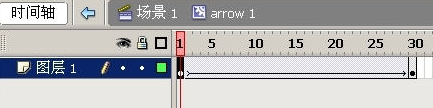
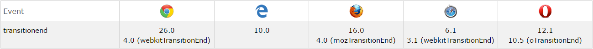
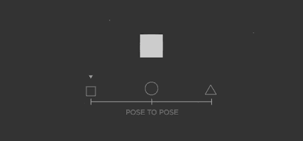
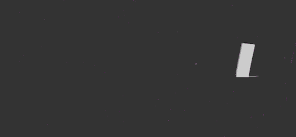
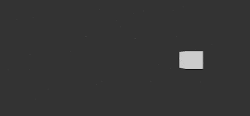
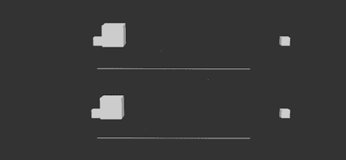

动画
2016-06-02
BEARYAN
WXG - 基础产品部 - 设计中心 - UI开发一组
什么是动画？
“会动的画面”
如何让静止的画面动起来？
定义关键帧（关键帧动画）

定义每一帧（逐帧动画）

动画与前端
关键帧动画
- CSS Transition
- CSS Animation
- SVG Animation
逐帧动画
- Canvas
CSS Transition
过渡，转变
.demo{
img{
width: 0;
height: 0;
}
&:hover{
img{
width: 300px;
height: 300px;
}
}
}
img{
/* ... */
transition: height .5s cubic-bezier(.83,.97,.05,1.2), width 1s .5s;
}
transition事件
JS可通过监听DOM的transitionend事件来知道transition是否结束

Transition需要明确知道开始状态和结束状态的具体数值，才能计算出中间状态。
所以，如果高度是0px到auto的话，就不会产生动画效果。
transition的优点在于简单易用，但是它有几个很大的局限:
- Transition需要事件触发，所以没法在网页加载时自动发生。
- Transition是一次性的，不能重复发生，除非一再触发。
- Transition只能定义开始状态和结束状态，不能定义中间状态，也就是说只有两个状态。
- 一条Transition规则，只能定义一个属性的变化，不能涉及多个属性。
——阮一峰
CSS Animation
.bear-crazy{
animation: shake-crazy 100ms ease-in-out; // name duration timing-function
animation-iteration-count: infinite; // 播放次数
animation-direction: alternate; // 下个周期播放方向，normal
animation-play-state: paused; // 动画运行状态
animation-fill-mode: forwards; // 动画之外的状态，none, backwards, both
&:hover{
animation-play-state: running;
}
}
keyframes
@keyframes shake-crazy {
10% {
transform: translate(-10px, -19px) rotate(6deg);
opacity: 0.47
}
20% {
transform: translate(-11px, 10px) rotate(5deg);
opacity: 0.82
}
/* ... */
0%, 100% {
transform: translate(0, 0) rotate(0)
}
}
animation事件
- animationstart - CSS 动画开始后触发
- animationend - CSS 动画完成后触发
- animationiteration - CSS 动画重复播放时触发
目前我们可以让动画元素：
- 数值变化（top, width, …）
- 属性变换（transform）
- 颜色变化（background, color, …）
沿着运动路径运动？
画线动画？
SVG Animation
马
——张鑫旭
SVG 画线
stroke-dasharray
用stroke-dasharray控制着path的实与虚。
stroke-dashoffset
stroke-dashoffset定义着dash开始的位置
300 -> 0
300 -> 600
为啥不用负数
——张鑫旭
Canvas
一帧帧地显示，从而实现动画
window.requestAnimationFrame()
API

path2d = new Path2D("M43.3,0.5c23.6 ...");
ctx.setLineDash([pathLength]);
ctx.lineDashOffset = pathLength;
function draw(){
ctx.clearRect(0, 0, canvas.width, canvas.height);
ctx.lineDashOffset = parseInt(pathLength * (1 - easing.get(timeDur)));
ctx.stroke(path2d);
requestAnimationFrame(draw);
}
draw();
Canvas画线
Canvas图文粒子
- 先把文字/图片draw出来
- pixels = ctx.getImageData(x, y).data;
- 这个pixels就是canvas里的所有像素点
- 数组每4个值，代表着1个像素点的RGBA
pixels = [0, 0, 0, 1, 255, 0, 0, 1, 255, 255, 255, 0]
从动画角度来说，哪个更好？
个人偏向第二个，因为第二个感觉更生动
如何让动画更生动？
Frank Thomas & Ollie Johnston
迪士尼的元老们帮我们总结了动画的十二条动画法则
SQUASH & STRETCH
挤压 & 拉伸
STAGING
表演及呈像方式
ANTICIPATION
预备动作
STRAIGHT AHEAD & POSE TO POSE
逐帧画法 & 关键帧画法


FOLLOW THROUGH & OVERLAPPING
动作惯性跟随 & 动作重叠

SLOW IN & SLOW OUT
慢进 & 慢出

ARCS
弧形运动轨迹
SECONDARY ACTION
附属动作
TIMING
时间控制
